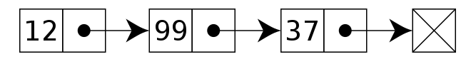
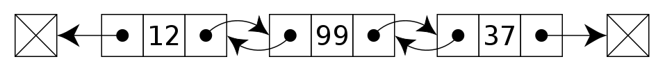
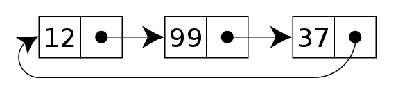

链表（Linked list）是一种常见的基础数据结构，是一种线性表，但是并不会按线性的顺序存储数据，而是在每一个节点里存到下一个节点的指针(Pointer)。由于不必须按顺序存储，链表在插入的时候可以达到O(1)的复杂度，比另一种线性表顺序表快得多，但是查找一个节点或者访问特定编号的节点则需要O(n)的时间，而顺序表相应的时间复杂度分别是O(logn)和O(1)。
分类
单向链表
链表中最简单的一种是单向链表，它包含两个域，一个信息域和一个指针域。这个链接指向列表中的下一个节点，而最后一个节点则指向一个空值。

// Definition for singly-linked list.
public class ListNode {
int val;
ListNode next;
ListNode(int x) { val = x; }
}双向链表
双向链表的每个节点有两个连接：一个指向前一个节点，（当此“连接”为第一个“连接”时，指向空值或者空列表）；而另一个指向下一个节点，（当此“连接”为最后一个“连接”时，指向空值或者空列表）。

// Definition for Doubly-linked list.
public class ListNode {
int val;
ListNode prev;
ListNode next;
ListNode(int x) { val = x; }
}循环链表
在一个 循环链表中, 首节点和末节点被连接在一起。这种方式在单向和双向链表中皆可实现。要转换一个循环链表，你开始于任意一个节点然后沿着列表的任一方向直到返回开始的节点。再来看另一种方法，循环链表可以被视为“无头无尾”。这种列表很利于节约数据存储缓存， 假定你在一个列表中有一个对象并且希望所有其他对象迭代在一个非特殊的排列下。
指向整个列表的指针可以被称作访问指针。

例题
遍历
leetcode 61. 旋转链表
给定一个链表，旋转链表，将链表每个节点向右移动 k 个位置，其中 k 是非负数。
示例:
输入: 1->2->3->4->5->NULL, k = 2
输出: 4->5->1->2->3->NULL
解释:
向右旋转 1 步: 5->1->2->3->4->NULL
向右旋转 2 步: 4->5->1->2->3->NULL遍历取余。
class Solution {
public ListNode rotateRight(ListNode head, int k) {
if (head == null) return head;
ListNode dummy = new ListNode(0), tail = dummy;
dummy.next = head;
int size = 0;
while (tail.next != null) {
tail = tail.next;
size += 1;
}
k = k % size;
if (k == 0) return head;
ListNode t = dummy; // new tail
for (int i = 0; i < size - k; i++) {
t = t.next;
}
ListNode h = t.next; // new head
tail.next = head;
t.next = null;
return h;
}
}leetcode 92. 反转链表 II
反转从位置 m 到 n 的链表。请使用一趟扫描完成反转（1 ≤ m ≤ n ≤ 链表长度）。
示例:
输入: 1->2->3->4->5->NULL, m = 2, n = 4
输出: 1->4->3->2->5->NULL解法一：迭代。
class Solution {
public ListNode reverseBetween(ListNode head, int m, int n) {
ListNode dummy = new ListNode(0), pre = dummy;
dummy.next = head;
for (int i = 1; i < m; i++) pre = pre.next; // 找到m节点前的节点
ListNode p = pre, c = p.next;
for (int i = 0; i <= n - m; i++) {
ListNode tmp = c.next;
c.next = p;
p = c;
c = tmp;
}
pre.next.next = c;
pre.next = p;
return dummy.next;
}
}解法二：递归。
class Solution {
public ListNode reverseBetween(ListNode head, int m, int n) {
if (m == 1) {
if (n == 1) return head;
ListNode last = reverseBetween(head.next, m, n - 1);
ListNode tmp = head.next.next;
head.next.next = head;
head.next = tmp;
return last;
} else {
head.next = reverseBetween(head.next, m - 1, n - 1);
return head;
}
}
}leetcode 25. K 个一组翻转链表
给你一个链表，每 k 个节点一组进行翻转，请你返回翻转后的链表。k 是一个正整数，它的值小于或等于链表的长度。
如果节点总数不是 k 的整数倍，那么请将最后剩余的节点保持原有顺序。
示例：
给你这个链表：`1->2->3->4->5`
当 *k* = 2 时，应当返回: `2->1->4->3->5`
当 *k* = 3 时，应当返回: `3->2->1->4->5`解法一：利用快慢指针和迭代。
/* when k = 2:
* dummy 1 2 3 4 5
* | | \
* tail next_tail next_head
*
* then:
* dummy 1 2 3 4 5
* | | \
* tail next_tail next_head
* ...
*/
class Solution {
public ListNode reverseKGroup(ListNode head, int k) {
ListNode dummy = new ListNode(), tail = dummy;
dummy.next = head;
while (true) {
ListNode next_head = tail, next_tail = tail.next;
for (int i = 0; i < k; i++) {
next_head = next_head.next;
if (next_head == null) return dummy.next;
}
ListNode pre = next_head.next, cur = next_tail;
for (int i = 0; i < k; i++) {
ListNode tmp = cur.next;
cur.next = pre;
pre = cur;
cur = tmp;
}
tail.next = next_head;
tail = next_tail;
}
}
}解法二：递归。
class Solution {
public ListNode reverseKGroup(ListNode head, int k) {
ListNode fast = head;
for (int i = 0; i < k; i++) {
if (fast == null) return head;
fast = fast.next;
}
ListNode pre = reverseKGroup(fast, k), cur = head;
for (int i = 0; i < k; i++) {
ListNode tmp = cur.next;
cur.next = pre;
pre = cur;
cur = tmp;
}
return pre;
}
}解法三：利用栈。
class Solution {
public ListNode reverseKGroup(ListNode head, int k) {
Deque<ListNode> stack = new LinkedList<>();
ListNode dummy = new ListNode(0), pre = dummy, cur = head; // cur起始为head
while (true) {
for (int i = 1; i <=k; i++) {
if (cur == null) return dummy.next; // if语句先判
stack.push(cur);
cur = cur.next;
}
while (!stack.isEmpty()) {
pre.next = stack.pop();
pre = pre.next;
}
pre.next = cur;
}
}
}双指针
leetcode 82. 删除排序链表中的重复元素 II
给定一个排序链表，删除所有含有重复数字的节点，只保留原始链表中 没有重复出现 的数字。
示例:
输入: 1->2->3->3->4->4->5
输出: 1->2->5需要注意条件的判断：
class Solution {
public ListNode deleteDuplicates(ListNode head) {
ListNode dummy = new ListNode(0), slow = dummy, fast = head;
dummy.next = head;
while (fast != null && fast.next != null) {
if (fast.val == fast.next.val) {
while (fast.next != null && fast.val == fast.next.val) fast = fast.next;
slow.next = fast.next;
} else {
slow = slow.next;
}
fast = fast.next;
}
return dummy.next;
}
}leetcode 19. 删除链表的倒数第N个节点
给定一个链表，删除链表的倒数第 n 个节点，并且返回链表的头结点。
示例：
给定一个链表: 1->2->3->4->5, 和 n = 2.
当删除了倒数第二个节点后，链表变为 1->2->3->5.快慢指针充当了建议队列Queue：
class Solution {
public ListNode removeNthFromEnd(ListNode head, int n) {
if (head == null) return null;
Queue<ListNode> queue = new LinkedList<>();
ListNode dummy = new ListNode(0), slow = dummy, fast = head;
dummy.next = head;
for (int i = 0; i < n; i++) fast = fast.next;
while (fast != null) {
slow = slow.next;
fast = fast.next;
}
slow.next = slow.next.next;
return dummy.next;
}
}leetcode 142. 环形链表 II
给定一个链表，返回链表开始入环的第一个节点。 如果链表无环，则返回 null。
示例：
输入：head = [3,2,0,-4], pos = 1
输出：tail connects to node index 1
解释：链表中有一个环，其尾部连接到第二个节点。假设直链表长度为 L ，环链表长度为 C 。利用快慢指针，两指针第一次相遇时慢指针经过 C ，快指针经过 2C 。将快指针移回head，步长改为 1，移动 L 后与移动了 L + C 的慢指针在环形链表入口节点相遇。
public class Solution {
public ListNode detectCycle(ListNode head) {
ListNode slow = head, fast = head;
while (true) { // 找到第一次相遇点
if (fast == null || fast.next == null) return null;
slow = slow.next;
fast = fast.next.next;
if (slow == fast) break;
}
fast = head;
while (fast != slow) {
slow = slow.next;
fast = fast.next;
}
return fast;
}
}类似的双指针还有leetcode 234. 回文链表，leetcode 86. 分隔链表。
多链表处理
leetcode 2. 两数相加
给出两个非空的链表用来表示两个非负的整数。其中，它们各自的位数是按照逆序的方式存储的，并且它们的每个节点只能存储一位数字。
示例：
输入：(2 -> 4 -> 3) + (5 -> 6 -> 4)
输出：7 -> 0 -> 8
原因：342 + 465 = 807分开处理两个链表节点会简化程序：
class Solution {
public ListNode addTwoNumbers(ListNode l1, ListNode l2) {
int flag = 0;
ListNode dummy = new ListNode();
ListNode cur = dummy;
while (l1 != null || l2 != null) {
int num1 = l1 == null ? 0 : l1.val;
int num2 = l2 == null ? 0 : l2.val;
cur.next = new ListNode((num1 + num2 + flag) % 10);
flag = (num1 + num2 + flag) / 10;
cur = cur.next;
if (l1 != null) l1 = l1.next;
if (l2 != null) l2 = l2.next;
}
if (flag == 1) cur.next = new ListNode(1);
return dummy.next;
}
}leetcode 23. 合并K个排序链表
合并 k 个排序链表，返回合并后的排序链表。请分析和描述算法的复杂度。
示例:
输入:
[
1->4->5,
1->3->4,
2->6
]
输出: 1->1->2->3->4->4->5->6解法一：利用最小堆原理的优先队列，时间复杂度： ；空间复杂度：，用于建立优先队列。
class Solution {
public ListNode mergeKLists(ListNode[] lists) {
ListNode dummy = new ListNode(0), cur = dummy;
PriorityQueue<ListNode> pq = new PriorityQueue<>((o1, o2) -> o1.val - o2.val);
for (ListNode node : lists) {
if (node != null) pq.add(node);
}
while (!pq.isEmpty()) {
ListNode tmp = pq.remove();
cur.next = tmp;
if (tmp.next != null) pq.add(tmp.next);
cur = cur.next;
}
return dummy.next;
}
}解法二：分治，时间复杂度： ；空间复杂度：。
// 自底向上的迭代求解
class Solution {
public ListNode mergeKLists(ListNode[] lists) {
if (lists.length == 0) return null;
int size = lists.length;
int k = 1;
while (k < size) {
for (int i = 0; i < size - k; i += 2 * k) {
lists[i] = mergeTwoLists(lists[i], lists[i + k]);
}
k <<= 1; // 利用位运算乘2
}
return lists[0];
}
public ListNode mergeTwoLists(ListNode l1, ListNode l2) {
ListNode dummy = new ListNode(0), pre = dummy;
while (l1 != null && l2 != null) {
if (l1.val < l2.val) {
pre.next = l1;
l1 = l1.next;
} else {
pre.next = l2;
l2 = l2.next;
}
pre = pre.next;
}
pre.next = l1 != null ? l1 : l2;
return dummy.next;
}
}
// 自顶向下的递归求解
class Solution {
public ListNode mergeKLists(ListNode[] lists) {
if (lists.length == 0) return null;
return merge(0, lists.length - 1, lists);
}
public ListNode merge(int l, int r, ListNode[] lists) {
if (l == r) return lists[l];
ListNode l1 = merge(l, (l + r) / 2, lists);
ListNode l2 = merge((l + r) / 2 + 1, r, lists);
return mergeTwoLists(l1, l2);
}
public ListNode mergeTwoLists(ListNode l1, ListNode l2) {
if (l1 == null) return l2;
if (l2 == null) return l1;
if (l1.val < l2.val) {
l1.next = mergeTwoLists(l1.next, l2);
return l1;
}else{
l2.next = mergeTwoLists(l1, l2.next);
return l2;
}
}
}排序
leetcode 148. 排序链表
在 O(n log n) 时间复杂度和常数级空间复杂度下，对链表进行排序。
示例 1:
输入: 4->2->1->3
输出: 1->2->3->4采用归并排序的思想，对排序后的子链表做类似于合并k个排序链表的操作：
class Solution {
public ListNode sortList(ListNode head) {
if (head == null || head.next == null) return head;
ListNode dummy = new ListNode(0), slow = dummy, fast = head;
dummy.next = head;
while (fast != null && fast.next != null) {
slow = slow.next;
fast = fast.next.next;
}
ListNode l2 = sortList(slow.next);
slow.next = null;
ListNode l1 = sortList(head);
return merge(l1, l2);
}
public ListNode merge(ListNode l1, ListNode l2) {
ListNode dummy = new ListNode(0), pre = dummy;
while (l1 != null && l2 != null) {
if (l1.val < l2.val) {
pre.next = l1;
l1 = l1.next;
} else {
pre.next = l2;
l2 = l2.next;
}
pre = pre.next;
}
pre.next = l1 != null ? l1 : l2;
return dummy.next;
}
}当然，递归的做法并不能满足空间复杂度的要求，可以利用自底向上的思想和位运算实现迭代算法，类似的题还有leetcode 109. 有序链表转换二叉搜索树。